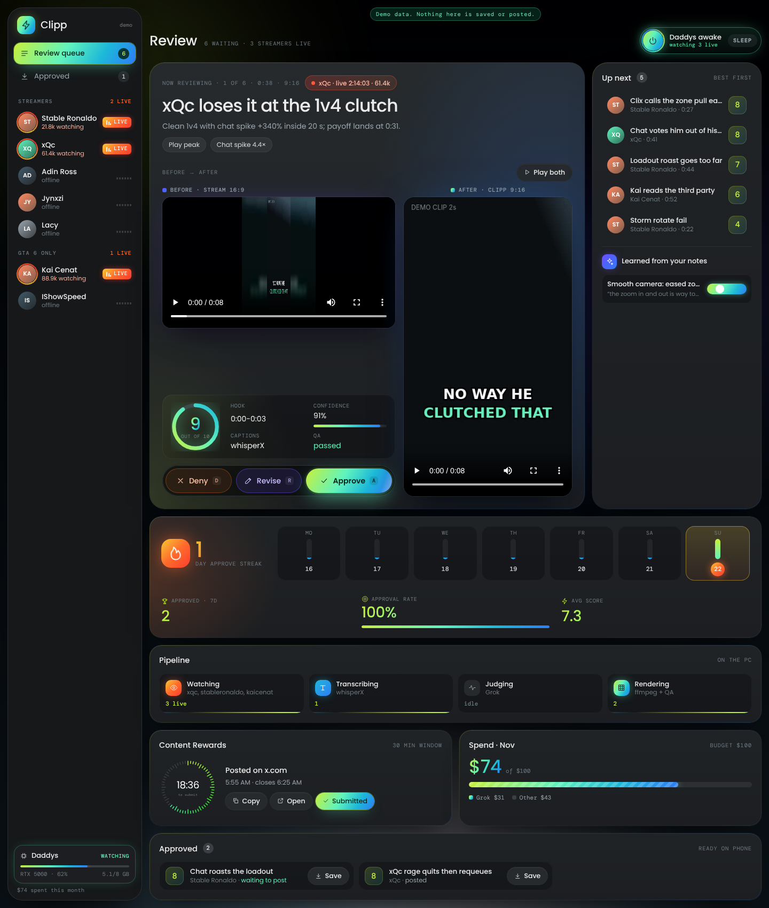

A private tool that watches live streams, cuts the best moments into vertical captioned clips, and puts every clip in front of one human before anything is posted.
What it is · What it does · How it works
Annotated screenshots of the real dashboard (demo mode), architecture and data-flow diagrams, the current skills and automations, proposed future skills and Grok agents, and an honest list of what is not yet proven.
Repository: theempp/clipping
Source of this PDF: docs/index.html + docs/style.css
Build: node docs/build.js
Facts come from code and notes in the repo. Each claim is tagged VERIFIED IN CODE · RAN HERE · PROPOSAL · UNVERIFIED
1 · At a glance
What Clipp is, in plain English
Clipp is built for one owner (Zo). It follows a short list of Twitch and Kick streamers, spots exciting moments from chat and audio, cuts them into 9:16 clips with word-by-word captions, and queues them in a private web dashboard. Zo approves, denies or asks for changes. Only approved clips are posted, to X and YouTube Shorts.
What it does
Watches up to 3 live channels at once on Zo's PC.
Detects chat/audio spikes with plain code (no AI needed for that).
Asks Grok to judge only a short text shortlist: keep or drop, where to trim, title.
Renders and quality-checks clips with ffmpeg.
Holds every clip for human approval, then posts and starts a 30-minute Content Rewards countdown.
Last handoff note (Pick Up Here.md, 2026-11-21): worker not running; XAI_API_KEY still empty, so a code-only stand-in judge is used.
How to read the tags in this document
Verified in code I read the code or config that does this. Ran here I executed it in this session (tests, demo dashboard, guard script). Proposal Not built. A suggestion only. Unverified Could not be checked from this environment (live streams, real accounts, Windows PC, third-party APIs).
Mismatch to know about. The root README.md still says "No application code has been built". That is out of date: worker/, dashboard/ and supabase/ exist and pass their tests. Trust the code and Decision Log.md, not that sentence.
Clipp project overview
2
2 · How it works
From live stream to posted clip
Code does the deterministic work. The model (Grok) is used once, on a text shortlist. A human gate sits in the middle. Verified in code(worker/README.md, live.py, pipeline.py)
Code / ffmpeg (no model)Model call (Grok, text only)Human stepExternal service
Everything runs at once
Watching, transcribing, judging and rendering are separate loops. Editing one clip never pauses the watch on live streams (the dashboard tiles show all four).
Restart-safe
Each job's stage is saved in SQLite. If the PC restarts, jobs resume from the last finished stage; transcripts and Grok answers are cached, so no work or money is repeated.
Cheap on purpose
Grok sees about 40 s of text for a few candidates per hour, never video. Heavy work (GPU captions, ffmpeg) is local, which keeps cost inside the $100-$250/month planning budget.
Design rule (CLAUDE.md, D026): detection, QA, state and rendering are code; the model only ranks, classifies and writes captions/titles. Feed it text windows, never full VODs. Results are cached by content hash and spend is logged.
Clipp project overview
3
3 · Architecture
Components and where they run
Three homes: Zo's PC does the heavy work, Supabase is the shared source of truth, and the dashboard is a thin web client. Verified in codeDeployment status unverified
SupabaseOwn codeModel-drivenThird party
Worker holds
The Supabase service-role key plus Twitch, Kick, xAI, YouTube/X OAuth and Discord bot credentials, all in its local .env (names in .env.example). It also talks straight to the external services on the right (arrows omitted to keep the picture readable).
Dashboard holds
Only the public Supabase URL and anon key. It can read what RLS allows, and write only through four owner-checked functions (review, mark submitted, wake switch, rule toggle).
Ops bot holds
A Supabase MCP connector limited to read-only SQL by a hook, and a Discord plugin token stored outside the repo. Its settings deny reading any .env.
Clipp project overview
4
4 · Data flow and states
Two state machines keep the gate honest
A local job moves through restart-safe stages in SQLite. Separately, each clip in Supabase has a state, and Postgres itself rejects illegal moves. Verified in code(states.py, 20261120120000_core.sql)
Human moves (amber)
Only Zo, through the dashboard function review_clip: pending_review → approved / revise / rejected, and approved → revise / rejected.
Worker moves (blue)
Only these: qa_passed → pending_review, revise → pending_review, approved → scheduled → published / failed, failed → scheduled. The worker can never approve.
Defence in depth
The same table is enforced in Python and in a Postgres trigger. A publications row is refused unless a human approved the clip. Interrupted posts are never auto-retried (could double-post).
Clipp project overview
5
5 · Under the hood
What each stage actually does
Stage
Behaviour (from code)
Where
Ingest
Twitch chat over anonymous IRC; Kick chat over its public socket (unofficial, may break); Twitch live status polled every 60 s. Video: streamlink → ffmpeg 10 s segments, last 10 min kept. Loudness (ebur128) on the same clock; gaps are recorded explicitly.
ingest/capture/clock.py
Detector
Every second per channel: score = 0.45·chat burst + 0.20·unique chatters + 0.15·emote weight + 0.20·loudness (robust z-scores vs a 10-min baseline). One chatter counts max 2 messages per burst (spam guard). Trigger at ≥ 2.5; triggers within 20 s merge; 45 s cooldown. Core streamers get ×1.25 while on GTA 6.
detector/spike.pysignals.pydedupe.py
Rights gate
Roster streamers are always captured for Zo's own channels (D070). An active campaign naming the streamer wins and brings its rules. Off-roster streamers need an active campaign. Draft campaigns do not count.
remote/rights.pyroster.py
Transcribe
whisperX only on candidate windows, cached by audio hash. English only.
transcribe.py
Judge
Grok gets ≈40 s of transcript + 30 chat lines + scores, returns strict JSON (keep, category, hook type, trim in/out, title, caption, hashtags, emphasis words, score 1-10). Score < 6 is dropped; trims snap to word boundaries. No XAI_API_KEY → stand-in judge keeps every moment, ~40 s around the chat peak, titled "UNJUDGED".
judge/grok.pyheuristic.py
Render
1080×1920 H.264, ASS captions (Poppins SemiBold 78 px, mint active word, 3 words/line, 90 ms pop), eased 112% zooms (max 2/clip), slow 3% push, loudnorm ≈ −14 LUFS, bitrate cap 6 Mbps. Gaming layouts crop facecam + gameplay; IRL uses a gliding face-tracked crop. Keeps the untouched 16:9 window for before/after.
render/config/channels.example.toml
clip-qa
Fails on: not 1080×1920 / yuv420p, duration outside campaign min-max, size > 50 MB, no audio, loudness outside −14 ±2.5 LUFS, true peak clipping, missing or off-screen captions, required tag missing, banned word, streamer not permitted.
qa.py
Review loop
Revise notes are read by a keyword parser (Grok adds to it when a key is set). Style asks (zoom, SFX, caption colour, max length) become standing rules in edit_rules; queued clips that break a rule are hidden and re-edited before Zo sees them.
rules.pypipeline.py
Publish
YouTube resumable upload and X chunked upload through OAuth. One publications row per clip × destination is the idempotency key. Up to 3 retries with 5-min backoff for retryable errors; default cap 10 posts/day per destination.
publish/
Ran here The worker test suite exercises these paths with real ffmpeg renders and fakes for network services: 120 passed in 184 s. Unverified No live Twitch/Kick/Grok/YouTube/X call was made in this session.
Clipp project overview
6
6 · The dashboard (demo mode)
Workflow 1: the page starts asleep, "Wake up" turns it on
123456
Figure 1 · Asleep. The whole page is dimmed until Wake up is pressed.
78910
Figure 2 · Awake. Same page after the switch: colours, LIVE tags and the pipeline come alive.
Demo ribbon. Appears when no Supabase keys exist or NEXT_PUBLIC_CLIPP_DEMO=1: nothing is saved or posted (D057).
Sleep banner. "No streams are being watched or clipped. Your queue and approved clips still work."
Wake up. Writes control.awake via set_awake; the PC reads it and starts or stops capture (D055).
Streamer rail. Core roster on top; offline streamers show a faint chat-heat strip.
Machine card. The PC's own heartbeat: state, GPU use, VRAM. Demo values are sample data.
Queue still usable while asleep: review does not need the PC.
Wake pill. Shows what the PC reports ("watching 3 live"), so the switch never fakes a running PC.
LIVE rows. Viewers, animated equaliser tag; clicking opens the streamer's Cinema page.
"GTA 6 only" group. Captured only while the category is GTA 6 (D069).
Machine card, awake. GPU bar and VRAM move while working.
Clipp project overview · screenshots are real renders of dashboard/ in demo mode (sample data)
7
6 · The dashboard (demo mode)
Workflow 2: review the best clip first
123456789
Figure 3 · Review queue. The top clip is selected; the queue is ordered by score, then confidence, then age (D053).
Context chip. Which streamer, live now or not, time live, viewers.
Title + reason. Grok's title and a one-line why ("chat spike +340%, payoff at 0:31").
Tags. Hook type and detector strength (4.4× the baseline).
Before. The untouched 16:9 stream window (kept since D077).
After. The 9:16 clip with word-by-word captions. "Play both" runs them together.
Deny · Revise · Approve. Keys D, R, A. Approve and Deny wait 4 s with Undo (D058).
Up next. Remaining clips, best first.
Learned from your notes. Standing edit rules with on/off switches.
In the demo, clips are three small sample videos; $74 spent, viewer counts and streak numbers are sample data, not real usage. The "Stream" embed on the live page is the official Twitch/Kick player (see Figure 8).
Clipp project overview
8
6 · The dashboard (demo mode)
Workflow 3: ask for a change, or approve with a safety net
1234
Figure 4 · Revise (press R). Plain-English note. Typed here: "the zoom is too sharp, make it smoother and keep it under 30 seconds".
Free text box (500 chars, Ctrl+Enter sends).
Quick chips: smoother zooms, no zooms, under 30 seconds, no sound effects, blue captions.
"Fix this on every clip". On by default: style asks become standing rules (D078); per-clip asks (title, trim) never do.
Send revision. Creates a revisions row; the PC re-renders only what changed and the clip returns to review.
1234
Figure 5 · Approve (press A). The next clip loads immediately while the decision waits 4 seconds.
Approve. Calls review_clip; Postgres re-checks the owner and the allowed state move.
Undo toast. Cancels before anything reaches the database (key U).
Next clip (84% confidence, score 8) is already selected.
Counts update at once (5 waiting, Up next 4). The database call is held for 4 s; after that the clip becomes "scheduled" for the publisher.
Clipp project overview
9
6 · The dashboard (demo mode)
Workflow 4: track the day, the pipeline, the countdown and the budget

123456
Figure 6 · Below the review card (same page, 1440×1700 capture, cropped). Keyboard: A approve · D deny · R revise · U undo..
Approve streak + week. Clips and approvals per day; today highlighted.
7-day numbers. Approved count, approval rate, average score.
Pipeline tiles. Watching → Transcribing → Judging → Rendering, with counts, from the worker heartbeat. They run at the same time, not one at a time.
Content Rewards countdown. 30 min after posting. Copy / Open the post link, then Submitted (D025: Zo submits by hand).
Spend meter. Month total vs a $100 budget constant in the page code, split Grok / other.
Approved list. "Ready on phone" with Save (downloads streamer-title.mp4).
Check: the planning ceiling in D012 is $250/month, but the dashboard hard-codes BUDGET = 100 (dashboard/app/(app)/page.tsx). The meter will look over-budget earlier than the decision requires. Worth aligning.
Clipp project overview
10
6 · The dashboard (demo mode)
Workflow 5: a per-streamer live page, and the phone layout
1234567
Figure 7 · Cinema page for xQc (/live/xqc).
Header. Platform, live time, viewers, game.
Stream / Latest clip. Muted official player, or the newest clip.
Blank panel: the Twitch embed cannot load in this offline sandbox; on a real PC it is the live player (not verified here).
Chat heat. Line = chat rate; bars = scored moments; orange = kept as clips.
Submit window. The 30-min countdown for this streamer.
891011
Figure 8 · Phone (390 px wide). 8 avatar strip replaces the rail · 9 queue count · 10 wake switch · 11 same review card, stacked. Approve / Deny / Revise pin to the bottom (per README).
Clipp project overview
11
7 · Data and security
The Supabase data model and how access is locked down
Verified in code5 migrations in supabase/migrations/. Unverified I could not inspect the live project; docs say all were applied by hand (D059).
Who and what is watched
owners
Who may log in and see data
streamers
Roster, crop layouts, GTA 6 flags
campaign_posts
Raw Discord posts
campaigns
Parsed briefs, rules, verdict (draft/active)
destinations
Accounts to post to
Clips and decisions
clips
The clip, its state, score, files
clip_events
Audit log, written by trigger only
revisions
Zo's change notes
edit_rules
Standing style rules (D078)
publications
Clip × destination = idempotency key
submissions
30-min Content Rewards windows
Operations
control
Wake Up switch (single row)
worker_heartbeat
PC status every 15 s
spend
Cost meter vs budget
candidate_log
Detector/judge outcomes for tuning
Access rules
Sign-in by email link or 6-digit code; shouldCreateUser: false; sign-ups off in Supabase.
Row-level security: only users in owners can read any table.
Dashboard writes only through review_clip, mark_submitted, set_awake, set_rule_active; each re-checks is_owner().
Clips sit in a private bucket; the dashboard asks for a 1-hour signed link per play or download.
The service-role key exists only in the worker's .env (I did not open any .env; I read .env.example names only).
Database-enforced guarantees
clips_guard: only listed state moves per actor; the worker cannot approve.
clips_audit: every state change writes an audit row automatically.
publications_guard: a post row is refused unless a human approved the clip.
publications_open_submission: posting opens the 30-minute countdown.
claim_owner on auth.users (kept out of the repo so no email is committed).
Ran here The worker suite includes an SQL migration test (test_sql.py) passed (not skipped) against a local Postgres in this environment: the migrations apply and the guard behaves as described.
Clipp project overview
12
8 · Integrations
What talks to what, and how far each link is proven
Integration
Used for
Access / key (names only)
Status
Twitch IRC + Helix
Live chat (anonymous), live/category status every 60 s (D040)
TWITCH_CLIENT_ID/SECRET (status only)
Codedno live call here
Kick
Chat via public socket (D041), status via app
KICK_CLIENT_ID/SECRET, KICK_PUSHER_KEY
Codedpayload shape unverified
streamlink + ffmpeg
Video buffer, render, loudness
local binaries (FFMPEG_BIN)
ffmpeg used by tests
whisperX
Word timestamps for captions
local GPU, CUDA 12.8 torch
Coded checked on PC per D066 (notes)
xAI Grok
Judge shortlist; helps read revision notes
XAI_API_KEY, GROK_MODEL, price fields
Key empty per notes stand-in judge used
Supabase
DB, Storage, Auth, Realtime
service-role (worker), anon (dashboard)
Schema codedlive project unverified
Vercel
Hosts the dashboard for phone access
project Root Dir dashboard
Deploy not verified
YouTube Data API
Shorts upload (resumable)
OAuth refresh token in worker env
Codedquota/endpoints to re-check
X API
Chunked media upload + post
X_MAIN_CLIENT_ID/SECRET/REFRESH_TOKEN
Codedshapes/prices to re-check
Discord (campaign watcher)
Reads Reach announcements Followed into Zo's own server (D024)
DISCORD_BOT_TOKEN, channel id
CodedReach channel type unverified
Discord (ops bot)
Read-only status over DM (Claude Code channel plugin)
No secret values were read or are shown here. Key names come from worker/.env.example and dashboard/.env.example only.
Clipp project overview
13
9 · Skills (.claude/skills)
14 skills: instructions Claude Code loads on demand
Skills are Markdown playbooks, not running programs. Claude Code loads one when its one-line description matches the task (token policy: bodies ≤ 60 lines). Verified in code (read each SKILL.md).
Skill
Role · trigger
What it tells Claude to do · related code
stream-ingest
Capture chat, video buffer, VOD chat on one clock. When building/debugging capture.
streamlink → 10 s segments, ebur128, one monotonic clock, gap rows, sleep block only while monitoring, max 3 channels. Code: ingest/, capture/.
clip-detector-tuning
Tune thresholds per channel. When detections are too many/few/poor.
Stats not transcripts; one threshold at a time; replay on stored chat; model only ranks top-N. Code: detector/replay.py, clipworker replay.
clip-render
Detected window → 9:16 captioned clip. When changing the render step.
ffmpeg only; layouts, ASS captions from whisperX, loudnorm, manifest; re-render only changed step. Code: render/.
Human approval, audit, limits. When touching publish/review.
State list, audit row per move, typed revise notes, idempotent publisher, re-check platform limits. Code: states.py, publish/, SQL triggers.
campaign-scout
Score a pasted campaign brief. When a brief or Discord/X post is given.
Extract fields + every rule verbatim, apply D072 floor (> $1 per 1K views, roster only), rank pursue/ask/avoid. Code: campaigns/scout.py.
learn
Record a proven lesson. After rejections or repeated corrections.
Log in Learning and Memory.md; promote only with 2+ cases; smallest edit. (Different from the runtime edit_rules.)
repo-audit
Vet third-party code. Before running any cloned tool.
Quarantine, read install paths, grep for risky patterns, sandbox first run, verdict + SHA in Tools and Repos.md.
investigate-first
Diagnose before editing. For unclear failures.
Evidence-ranked hypotheses; no edits until a cause is named.
video-breakdown
Study a video or run. Only when asked.
Facts from stored data only; stageshow scenes; saves to breakdowns/ (folder does not exist yet).
caveman
Terse reply style. "be brief", /caveman.
Answer first, drop filler, keep technical facts. Plain prose for security and anything written to files.
Clipp project overview
14
9 · Skills (continued)
Design skills, and where skills have drifted from the code
Skill
Role · trigger
Notes
impeccable
Design/critique/polish any frontend. When asked to design, redesign, audit or polish UI.
v4.9.1; large: 40+ reference files, helper scripts, 4 sub-agent definitions (agents/*.toml). Visual values must still come from references/.
apple-design
Fluid, physical motion and Apple-style foundations. For gesture/spring/material UI.
Dashboard UI reference (CLAUDE.md lists it for the dashboard).
stageshow
Faux product UI and animated cursor demos. When a mocked UI or product demo is wanted.
React + CSS kit with ~70 examples; used by video-breakdown. Not used by the runtime.
Drift found between skills, notes and code
stream-ingest says Twitch status uses EventSub and Kick uses the official webhook; code and D040/D041 use Helix polling and the public Kick socket.
stream-ingest and clip-qa say capture needs an active campaign (D016); D070 changed this: roster streamers are always captured.
clip-detector-tuning says transcribe with faster-whisper; code uses whisperX.
clip-render says "face tracking deferred"; the code now has a gliding face-tracked IRL crop (D077, optional reframe extra).
worker/README.md diagram still labels the gate "active campaign only, D016".
Root README.md says no code exists. Also, CLAUDE.md mentions "Atlas" for design values; I found no Atlas tool or file in the repo (only the phrase). Unverified
These are documentation mismatches, found by reading. None changes application behaviour. Because skills steer future Claude Code sessions, stale text here can cause wrong edits. A weekly skill review is already in CLAUDE.md; this list is a ready starting point.
Clipp project overview
15
10 · Automations and agents that exist today
What runs by itself, what triggers it, how they connect
clipworker (worker)
Started by hand: clipworker live (no autostart script in the repo). Reads the Wake switch, heartbeats every 15 s, moves clips only through allowed state changes. Tools: ffmpeg, streamlink, whisperX, Grok, YouTube, X.
Discord ops bot (ops/discord-bot)
A Claude Code session kept alive by run-bot.ps1 (single instance, backoff restart, log file). Allowed tools: Read/Grep/Glob, Discord reply/react/edit/fetch, Supabase execute_sql/list_tables, one localhost GET. .env reads are denied. Zo DMs one word: live, worker, dash, queue, help.
GitHub workflows
dashboard.yml (Node 22: npm ci, tsc lint, tests, demo-mode build) and worker-tests.yml (Python 3.11 + ffmpeg + Postgres, pytest -q). Path-filtered, on PR and push to main. No deploy or release job.
Ran hereguard-sql.mjs allowed select count(*) from clips and a with … select; denied a stacked drop table, an update, and, as a false positive, select 'reset' as x (any denylisted word, even inside a string). Safe, but over-strict. Unverified The bot itself needs Windows, the Discord plugin and tokens; settings.json hard-codes a Windows path to the hook.
Clipp project overview
16
11 · Proposals (not built)
Recommended new skills Proposal
Each closes a gap I found in the repo or notes. Keep every skill ≤ 60 lines; heavy detail goes to reference files (CLAUDE.md).
Proposed skill
Responsibility
Access it needs
Fits with
go-live-preflight
Ordered checklist before the first live run: clipworker check, replay eval (recall ≥ 80%, ≤ 10 candidates/h), keys present (names only), crop boxes approved, re-check YouTube/X docs.
Read repo, run clipworker CLI on the PC. No secret values.
Build a labeled eval set from approved/rejected clips and pick the cheapest GROK_MODEL that passes (open item in worker/README.md).
XAI_API_KEY via request-credential flow; read clips/candidate_log; writes only results to the vault.
learn, judge/grok.py
crop-box-calibrator
Grab a frame per streamer, propose a facecam/gameplay crop, show it on the frame for Zo's approval (3 boxes still pending).
ffmpeg frame grab on the PC; edit channels.toml only after approval.
clip-render, Streamer Roster note
outcome-ingest
Pull post performance (views, retention where available) into the DB so learn has evidence. Notes say none is ingested today.
YouTube Analytics / X read scopes (new OAuth scopes: unverified availability).
learn, campaign-scout, video-breakdown
skill-hygiene (weekly)
Run the CLAUDE.md weekly pass: reconcile skills with decisions (see drift list), prune unused skills, check /context size.
Read .claude/skills, Decision Log.md; edit skills via small diffs.
learn, repo-audit
worker-runbook
Start/stop/diagnose the PC worker, read logs, interpret the heartbeat. Includes a worker autostart task like the bot's.
PC shell; read-only Supabase.
investigate-first, ops bot
kick-verify
Capture a real Kick chat payload, confirm event names and reconnect behaviour, update the parser and tests.
Public Kick chat, read-only.
stream-ingest
secrets-guard
Before each commit: scan for tokens/keys, confirm .env* stay ignored, flag key names in logs.
Read repo; GitHub secret scanning.
repo-audit, publish gate
Clipp project overview
17
11 · Proposals (not built)
Recommended Grok bot agents Proposal
The original vision (notes: Vision and Requirements.md) was one "Grok bot" that watches, clips and edits. The code instead uses Grok in one narrow role. I recommend growing it as small single-purpose agents, each text-in / JSON-out, with no power to approve or post.
Agent
Responsibility
Required access
Status
Clip Judge
Keep/drop, trim, hook, title, score on the shortlist.
xAI key; text window + chat sample.
Exists key empty
Revision Interpreter
Turn Zo's note into structured edit asks and standing rules.
xAI key; the note text.
Exists (partial)
Brief Analyst
Read ambiguous campaign rule lines, flag risks, suggest pursue/ask/avoid with reasons. Code keeps the numeric floor.
xAI key; read campaign_posts; write drafts only (never activate).
Proposal
Title & Caption Writer
3 title/post-caption options per approved-score clip; respect campaign tags; Zo picks.
xAI key; transcript + judgment JSON.
Proposal
Content-Risk Screener
Advisory flag for platform-policy risk (slurs, doxxing, minors, copyrighted audio) from the transcript, shown next to QA. Code QA stays the hard gate.
xAI key; transcript only.
Proposal
Performance Analyst (weekly)
Summarise approvals, rejections and outcomes; propose learn entries and detector tweaks as drafts.
xAI key; read-only DB views; needs outcome-ingest first.
Proposal
Trend Spotter
Check what is spiking on X for roster streamers to bias which channels to prioritise.
xAI key plus X search access. Whether the API exposes live X search on Zo's plan is unverified.
Proposal
Guardrails for every Grok agent
Text windows and summaries only; never a full VOD or raw logs.
Strict JSON schema, validated in code before use; cache by content hash.
Cheapest model that passes a labeled eval; spend logged in spend.
No approve, publish, delete or env access. Output is a suggestion row.
Not recommended: a Grok agent that clips autonomously or posts. It would bypass the approval gate that D003/D042 make central, and it duplicates what ffmpeg and the detector already do deterministically.
Clipp project overview
18
11 · Proposals (not built)
How the proposed agents would plug into today's flow Proposal
Proposed agentSolid boxes already exist. Dashed arrows are suggestions Zo can accept or ignore; none can change state.
Suggested build order
Set the Grok key and run grok-eval; this unlocks the Clip Judge for real.
Title & Caption Writer (cheap, easy to verify by eye).
Brief Analyst once real campaign briefs exist (D019).
outcome-ingest then Performance Analyst.
Content-Risk Screener and Trend Spotter last.
Cost check
Planning budget is $100-$250/month total (D012). Every agent above is text-only on short windows, so cost scales with clips reviewed, not hours streamed. Real per-call prices are unverified: the price fields in the worker .env are blank.
Clipp project overview
19
12 · Limits
Current limitations
Not working yet or not proven
Never run end-to-end live. No record in the repo of a full stream → posted clip. Unverified
Worker was not running at the last handoff (2026-11-21) and has no autostart.
Grok key empty: the stand-in judge keeps everything and titles it "UNJUDGED"; ranking quality is unknown.
Kick chat uses an unofficial socket; payload names unverified.
YouTube / X endpoints, quotas and prices must be re-checked before the first live post.
Crop boxes for new roster members await approval; renders fall back to a tracked full-frame crop.
Vercel and CI results were not checked from here.
By design (V1 scope)
PC-only. Monitoring happens only while Zo's PC is on (D013). No 24/7 coverage.
3 captures at once until CPU/GPU load is measured. English captions only.
X + YouTube Shorts only. TikTok/Instagram not automated (D017).
Manual Content Rewards submission (D025); no Whop API.
One owner. No team or roles.
No performance analytics flow back yet, so learning is from review notes only.
Ops bot is read-only; cannot start the worker or approve.
Documentation and consistency issues I found
Root README.md claims no code exists; the planning notes and worker/README.md lag some decisions (D070 vs "active campaign only").
Several skills disagree with the code (page 15). Dashboard BUDGET = 100 vs D012's $250 ceiling.
The .claude/settings of the ops bot hard-codes a Windows user path; it will not run elsewhere without edits.
Vault test count (92) is older than the current suite (120 passed here).
What I could not verify in this environment: any live Twitch/Kick/Grok/YouTube/X call, the real Supabase project and its data, the Vercel deployment, GitHub Actions run history, Windows-only scripts (*.ps1), the Discord ops bot, GPU transcription, and whether CLAUDE.md's "Atlas" exists as a tool. Screenshots use the built-in sample data.
Clipp project overview
20
13 · Next steps
Practical order of work
#
Step
Owner
1
Fill XAI_API_KEY + GROK_MODEL in the PC .env; run a small labeled eval to pick the cheapest passing model.
Zo + Claude
2
Approve (or fix) the pending crop boxes, especially Jynxzi.
Zo
3
clipworker check, then replay on a stored Twitch chat file until recall ≥ 80% and ≤ 10 candidates/h.
Claude
4
First supervised live run: Wake Up, one channel, review the clips, approve none; watch heartbeat and spend.
Zo
5
Re-read YouTube and X docs; one test post to a private/test destination before real use.
Claude
6
Confirm Vercel deploy and phone login (code sign-in); add a worker autostart task like the bot's.
Zo + Claude
7
Reconcile stale skills/notes (page 15 list); align the budget constant with D012.
Claude
8
Add outcome ingestion, then the proposed Grok agents in the order on page 19.
Claude
How to rebuild this document
Source: docs/index.html, docs/style.css, screenshots in docs/assets/.
Build: node docs/build.js (uses preinstalled Playwright/Chromium; writes docs/Clipp-Project-Overview.pdf and checks no page overflows).
Screenshots: start cd dashboard && npm run demo, open localhost:3000; capture at 1440×900 (phone 390×844 @2x). Annotation pins are CSS (--x/--y in source pixels), so they can be moved without editing images.
What I ran to write this
npm ci, dashboard demo (next dev with demo env), Playwright screenshots.
npm test in dashboard: 11/11 pass. pytest in worker: 120 passed.
guard-sql.mjs with five sample queries.
No .env file was opened; no application code was changed.
 123456
123456 78910
78910 1234
1234 1234
1234 1234567
1234567 891011
891011